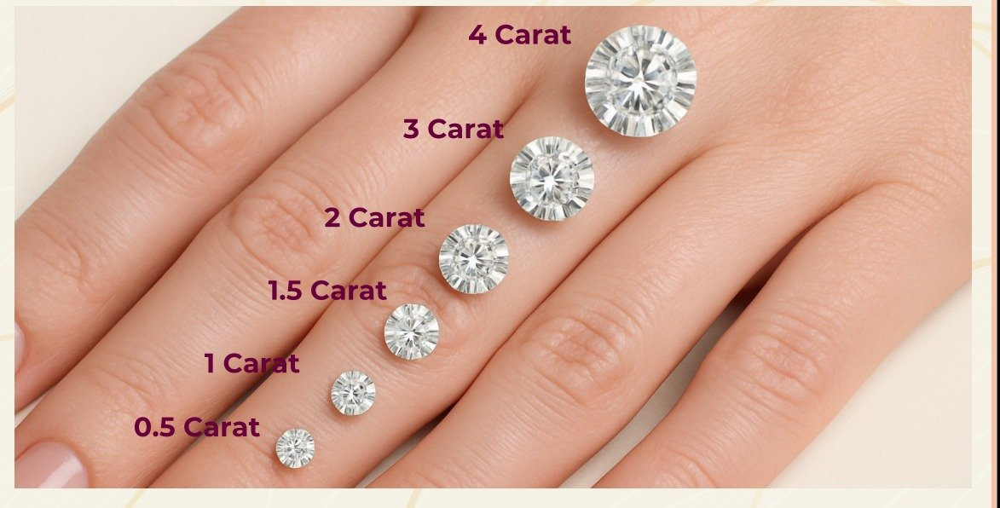

The diamond, reimagined
Everything you need to know to choose a lab grown diamond with confidence.
Real diamonds, grown above ground
Lab grown diamonds are real diamonds. They are made of pure carbon atoms arranged in the same cubic crystal structure as diamonds formed in the earth, which gives them identical chemical, physical and optical properties.
They are not the same as American diamonds, zirconia or moissanite, which are diamond look-alikes made of entirely different materials. Even trained jewellers cannot tell a lab grown diamond from a mined one by eye — the only way to be certain is to send it to a gemological laboratory.
By choosing a lab grown diamond, you choose not to compromise on quality or beauty.
Two ways to grow a diamond
Both methods recreate the conditions under which diamonds form naturally — the result is a rough diamond that is then cut and polished by hand, exactly like a mined one.
Chemical Vapour Deposition
A thin slice of diamond, called a seed, is placed in a sealed chamber filled with carbon-rich gas. The gas is heated until carbon atoms separate and settle onto the seed, building the diamond up layer by layer.
Growth takes a few weeks, producing diamonds of exceptional purity.
High Pressure, High Temperature
A diamond seed is placed in pure carbon and subjected to extreme pressure and temperatures of around 1,500 °C — mirroring the conditions deep inside the earth.
The carbon melts and crystallises around the seed, forming a new diamond.
Lab grown vs mined diamonds
Same diamond. Different origin.
| Lab Grown Diamond | Mined Diamond | |
|---|---|---|
| Composition | Pure carbon | Pure carbon |
| Hardness | 10 on Mohs scale | 10 on Mohs scale |
| Brilliance & fire | Identical | Identical |
| Graded on the 4Cs | Yes | Yes |
| Origin | Grown in weeks, with a fully traceable origin | Formed over billions of years, mined from the earth |
| Environmental impact | No mining, much less land disturbed | Large-scale excavation and land disruption |
| Price (1 carat, India) | ₹15,000 at Venora Jewels, for similar cut & clarity | ₹3–4 lakh for excellent clarity |
| Certification | Graded and certified as a diamond (IGI) | Graded and certified as a diamond |
Cut, colour, clarity & carat
The universal language for describing diamond quality — for lab grown and mined diamonds alike.
The source of sparkle
How well a diamond's facets are proportioned and polished to reflect light. It has the greatest effect on beauty.
Whiteness
Graded from D (colourless) to Z (light yellow). D–F are colourless; G–J are near colourless and look white when set.
Purity
The presence of tiny internal marks called inclusions. VS and above look perfectly clean to the naked eye.
Weight
A measure of weight, not size — one carat is 0.2 grams. Lab grown diamonds let you choose a larger carat for your budget.
Highlighted grades show the typical range we recommend. We'll help you find the right balance for your budget.

9KT vs 14KT vs 18KT — which is right for you?
Pure gold is too soft for everyday wear, so it is mixed with metals like copper, silver or zinc to make it stronger. The karat (KT) tells you how much pure gold your jewellery contains.
Durable & affordable
- Most durable and most affordable
- Paler colour tone, great for daily-wear pieces
- Best for value on a budget
The sweet spot
- Perfect balance of purity, shine and strength
- Scratch-resistant, ideal for everyday jewellery
- Rich colour without being too soft or costly
Rich & premium
- Purer, with a richer yellow hue
- Softer and more premium
- Perfect for bridal or occasion wear where shine matters most
At Venora Jewels, all designs are available in hallmarked 9KT, 14KT & 18KT — in rose, white and yellow gold.
Every diamond, independently graded
A grading report is a diamond's passport. It is issued by an independent gemological laboratory and records the diamond's 4Cs, measurements, and that it is laboratory grown.
Every Venora diamond is 100% IGI certified. IGI (International Gemological Institute) is one of the world's leading laboratories for lab grown diamonds. Most certified stones also carry a microscopic laser inscription of the report number on the girdle, so you can match the diamond to its certificate.
You can verify any report online on the laboratory's website using the report number.
Grading Report
Cut, colour, clarity, carat, measurements and growth method.
Frequently asked questions
What are lab grown diamonds?
Lab grown diamonds are genuine diamonds with the same carbon composition as naturally mined diamonds. They are created using advanced technology and are structurally, optically and chemically identical to mined diamonds. By choosing a lab grown diamond, you don't compromise on quality or beauty.
Are lab grown diamonds the same as American diamonds, zirconia or moissanite?
Absolutely not. American diamonds and zirconia are made from zirconium dioxide, and moissanite is a separate mineral entirely. None of these compare to the chemistry, quality and brilliance of a lab grown diamond. When you buy a lab grown diamond, you invest in a stone that is graded and certified as a diamond.
Can a jeweller tell the difference between lab grown and mined diamonds?
Since a lab grown diamond looks identical to a mined diamond, most jewellers won't be able to tell the difference, and standard diamond testers identify it as a diamond. The only way to be certain of its origin is to send it to a gemological laboratory.
How much does a lab grown diamond cost in India?
Price is the biggest difference between natural and lab grown diamonds. A 1 carat natural diamond with excellent clarity may cost ₹3–4 lakh, while a 1 carat lab grown diamond of similar cut and clarity costs ₹15,000 at Venora Jewels. Other brands sell similar quality for over ₹60,000 — as a direct-to-consumer brand, we are able to offer wholesale prices.
Do lab grown diamonds hold their value?
Unlike American diamonds, zirconia or moissanite, a lab grown diamond is a certified diamond and has resale value. Its resale value is generally lower than a mined diamond's, so we recommend choosing one because you love it and want to wear it every day.
Do lab grown diamonds change colour or become cloudy over time?
No. Like mined diamonds, they are stable and durable. A diamond may look dull when dirty, but a simple clean restores its sparkle.
Are lab grown diamonds ethical and eco-friendly?
Yes. Our lab grown diamonds are conflict-free and involve no mining, avoiding the land disruption and ethical concerns associated with some mined diamonds.
Which gold should I choose — 9KT, 14KT or 18KT?
9KT is the most durable and affordable, great for daily wear. 14KT is the sweet spot — a balance of purity, shine and strength. 18KT is purer and richer in colour, perfect for bridal and occasion wear. All Venora designs are available in hallmarked 9KT, 14KT and 18KT, in rose, white and yellow gold. See our gold guide.
Can I customise a design?
Absolutely. You can choose the gold purity, gold colour, diamond shape and carat for any design, or work with us to create something entirely your own. Message us on WhatsApp or book a consultation to get started.
Still have a question?
Ask us on WhatsApp